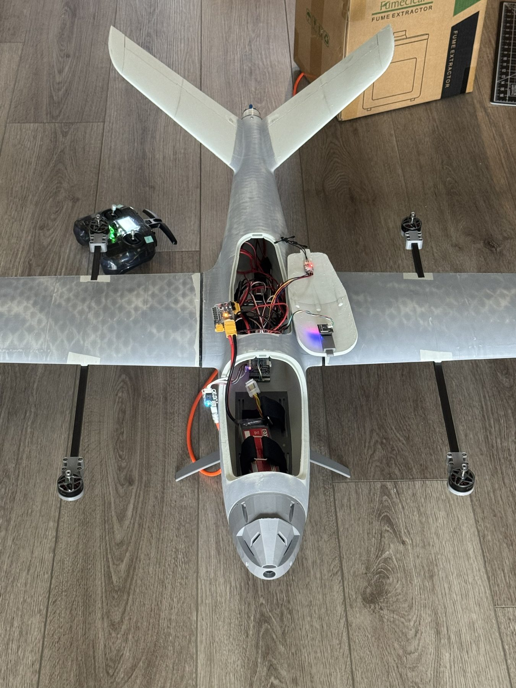
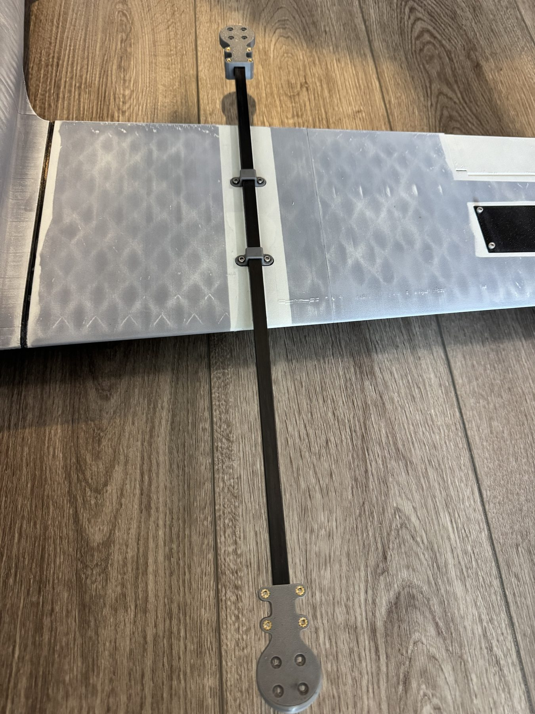
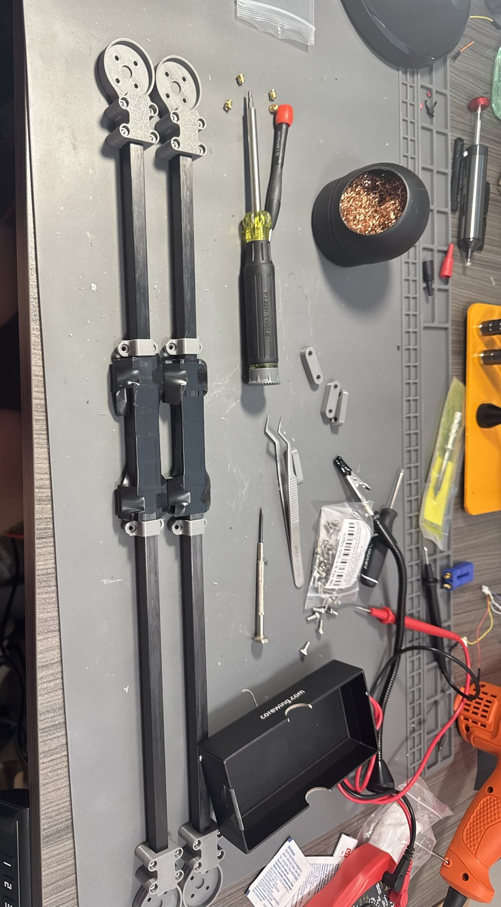
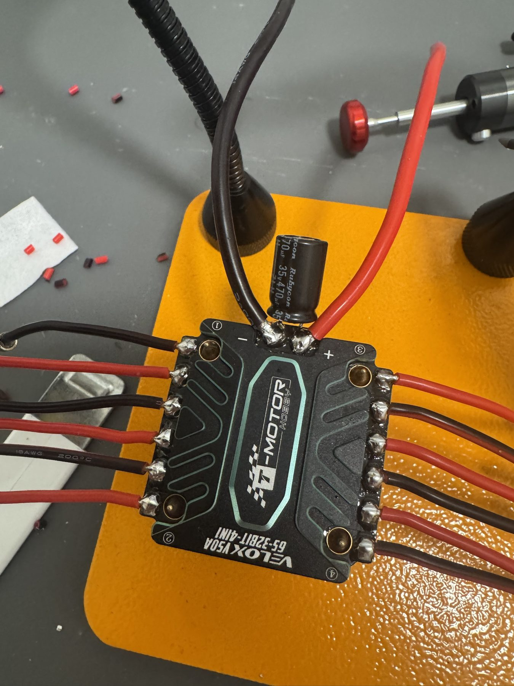

A fixed-wing aircraft that takes off and lands vertically like a quadcopter, then transitions to efficient forward flight on a pusher prop. A fully 3D-printed airframe of my own design, tuned in ArduPilot.
A VTOL quadplane gets the best of both airframes. Four lift rotors let it take off and land straight up, with no runway, so it can launch from anywhere. Once it is airborne, a pusher prop drives it forward and the wing carries the weight, which is far more efficient than hovering, so it covers real distance and endurance.
I designed and 3D-printed the whole airframe, then handled the propulsion, wiring, and ArduPilot setup, and flew it through the transition.

The skins print in PLA Aero, a light foaming filament, on a Bambu Lab X2D. The motor pods are PETG, bonded to the carbon-fiber booms with JB Weld ClearWeld so the lift motors sit out on stiff, straight arms. I printed those mounts at four walls and 80% infill after PC filament warped too much to hold tolerance. The nose is a full redesign in CadQuery, including a faired version sized around a Walksnail camera.


The vertical phase runs on four T-Motor F90 1300KV motors on 7-inch (7042) props, driven at DShot600 by a Velox V50A 4-in-1 ESC. Forward flight runs on a single SunnySky X2814 900KV pusher swinging an APC 10×6E, on its own PWM channel because the lift and pusher can't share a timer group. Power is a 4S 10000mAh pack, about 700 g. I kept it at 4S so the batteries are common across my other builds.

Open item: at the ~3.2 kg target weight the lift ESC runs hot, above its rated all-up weight during the hover phase. I'm working the thermal side now: airflow to the ESC and current headroom, since hover is the most demanding part of the flight.
It flies as an ArduPilot QuadPlane on a CoreWing F405. Bring-up meant splitting DShot and PWM across timer groups, fixing the ESC output bitmask (SERVO_BLH_MASK), and raising Q_ASSIST_SPEED to about 13–14 m/s so the wing takes over at the right speed for this airframe, well above the usual starting value. Airspeed comes from an MS4525 sensor, video from a Walksnail Avatar GT2, and I fly it on a RadioMaster Pocket running EdgeTX. The hover clip up top is from this testing.